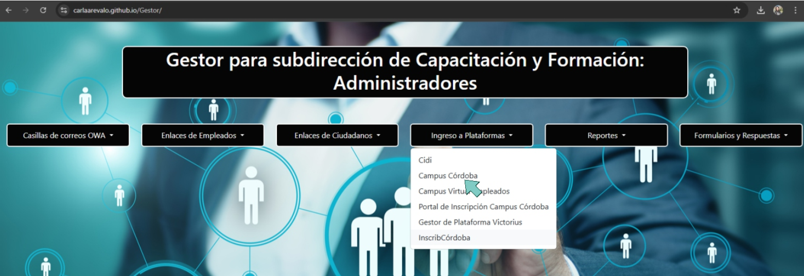
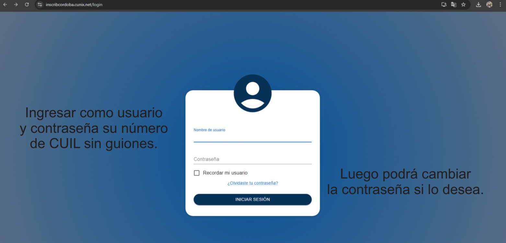
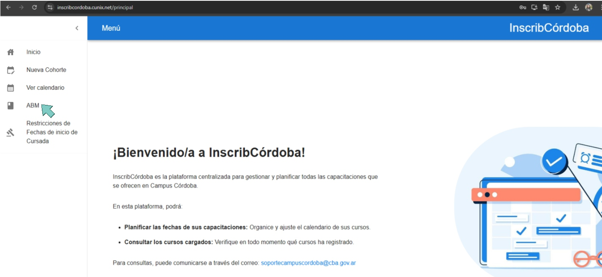
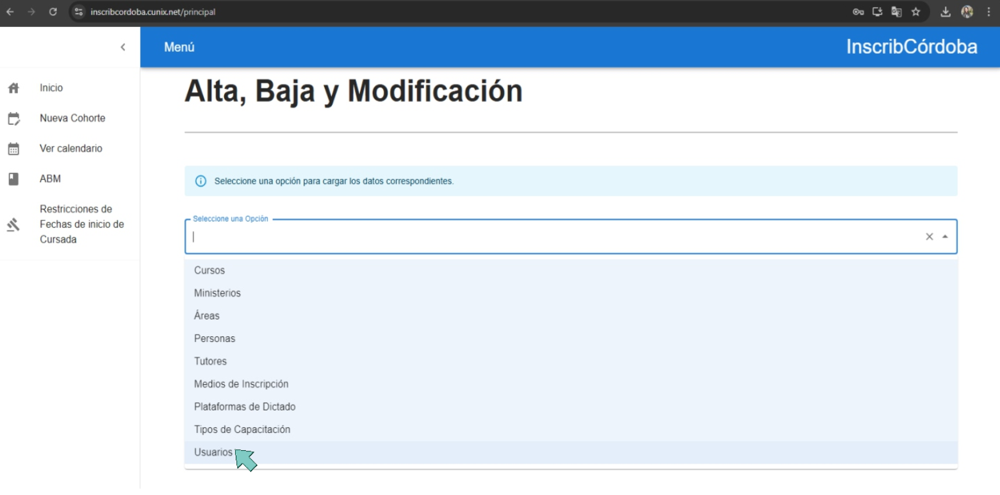
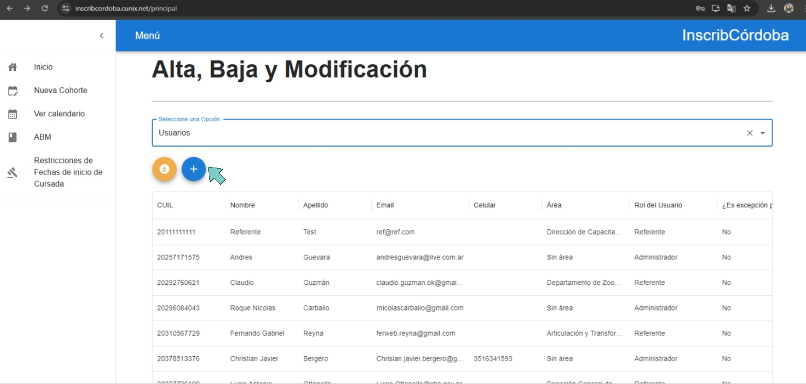
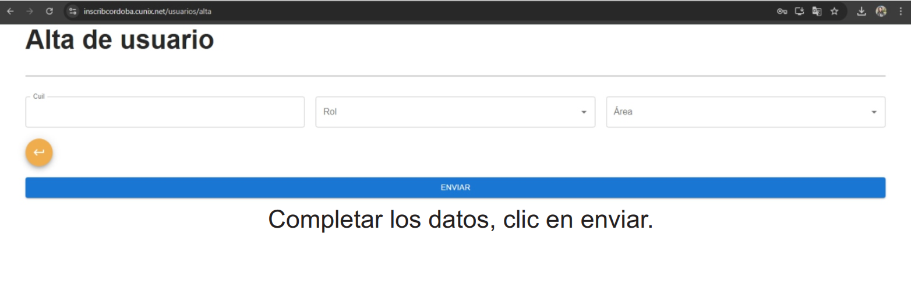

Acceder a la plataforma InscribCórdoba a través de este enlace.
Ingresar como usuario y contraseña su número de CUIL sin guiones.
Dentro del menú principal, seleccionar "Alta, Baja y Modificación".
En el menú desplegable, seleccionar "Usuarios".
Dentro las opciones de la pagina dar click en (+).
Completar todos los datos requeridos en el formulario de alta de usuario y hacer clic en "ENVIAR".
